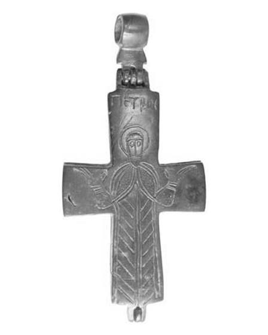
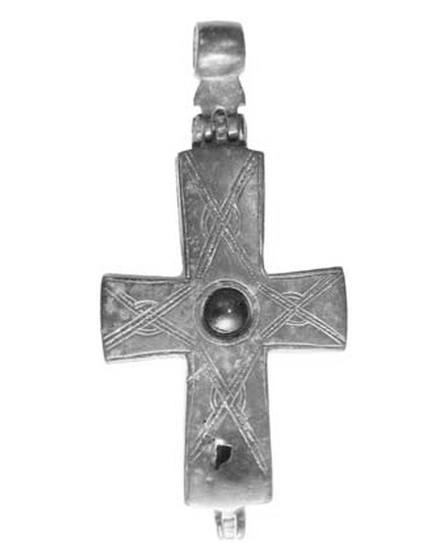

Catalog › CE-0380 · IAK2012-4
Encolpion bivalv de bronz, cat. 4, Colecția Arhiepiscopul Iakovos
sec. XI (1001–1100) · loc necunoscut · Colecția Arhiepiscopul Iakovos, Hellenic College Holy Cross, Brookline, Massachusetts
double-sided reliquary cross (enkolpion), bronz; c. XI (1001–1100); find spot unknown; kept at Colecția Arhiepiscopul Iakovos, Hellenic College Holy Cross, Brookline, Massachusetts.




Identificare
- Categorie
- Encolpion bivalv (relicvar)
- Material
- Bronz
- Dimensiuni
- Î 107 × L 50 × Gr 6 mm
- Greutate
- 56 g
Iconografie
- Avers
- Sf. Petru
- Descriere avers
- Sf. Petru orant, în picioare; inscripția ΠΕΤΡΟϹ.
- Revers
- Ornament geometric
- Descriere revers
- La centru pastă de sticlă; decor de linii încrucișate și motiv de nod.
- Inscripții
- ΠΕΤΡΟϹ [Πέτρος]
- Limba
- Greacă
Datare și atribuire
- Datare
- sec. XI (1001–1100)
- Centru
- Necunoscut
Descoperire
- Context
- Colecție (fără context)
- Coordonate
- 42.3318° N, -71.1212° E
- Precizia locului
- Loc de păstrare (loc de descoperire incert)
Păstrare și referințe
- Colecție
- Colecția Arhiepiscopul Iakovos, Hellenic College Holy Cross, Brookline, Massachusetts
- Bibliografie
- J. Cotsonis, M. Kouroumali, Greek, Roman and Byzantine Objects from the Archbishop Iakovos Collection, Hellenic College Holy Cross, Brookline, MA, 2012 [Cotsonis–Kouroumali 2012], p. 7, cat. nr. 4, reprodusă ibid., p. 7.
- Figura
- fără număr de figură (fotografii în catalog)
- Planșe
- Cotsonis–Kouroumali 2012, p. 7
- Observații
- Descrierea din sursă: „Bronze Pectoral Reliquary Cross”, bizantin (Constantinopol sau Anatolia), sec. XI. Dimensiunile: 10,7 cm cu inelul de suspendare × 5 × 0,6 cm; 56 g. Locul descoperirii nu e cunoscut cu precizie; punctul de pe hartă marchează locul de păstrare (Colecția Arhiepiscopul Iakovos), nu locul descoperirii. Coordonate: nu sunt date în sursă.
Citare: Corpus Encolpiorum, CE-0380, Encolpion bivalv de bronz, cat. 4, Colecția Arhiepiscopul Iakovos, --root/piese/IAK2012-4/ (accesat 2026-10-20).